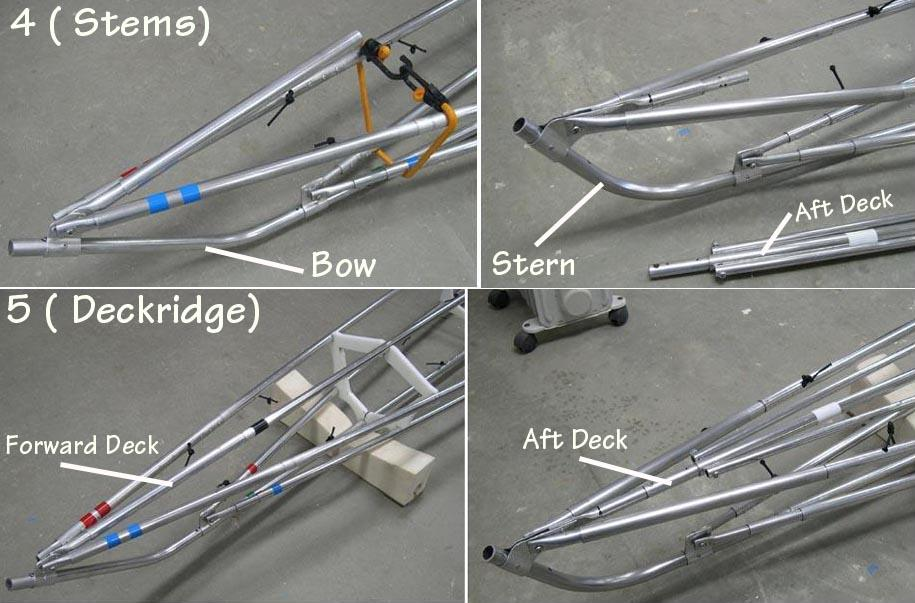

| Frame Assembly (6 of 8) | Menu Previous Page Next Page |
|

Step 4 - Attach the bow and stern sections by sliding them into the keel. Use stainless 10/24 machine screws to bolt the gunwales and chines to the aluminum stem plates. Remove the bungee cords. Step 5 - Attach the forward and aft deckridge to the deck tubes of the bow and stern sections. |
|